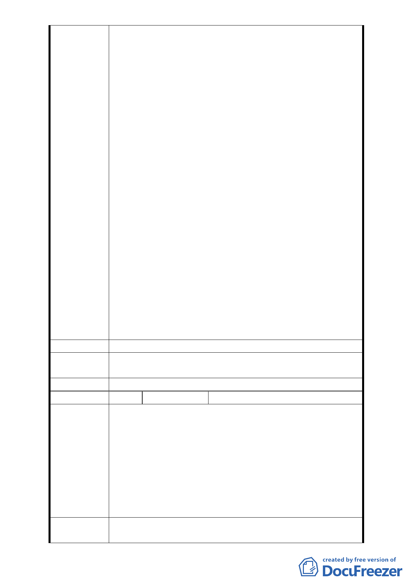

及社區居民的生活品質，所以最好整個重劃區
全部都改回公園綠地！此舉不免讓人嗤議「紫
藤樓社區少數住戶」的自我利益行為，踐踏社
會大眾及世代務農的地主們，完全捨棄社會公
義、市政發展以及該區地主土地資源的再利用
價值，改變河岸風情景觀的建設時機。
(2).市府建設法規中，對於河岸景觀建物包含建築建
蔽率、建物景觀等均有其嚴格要求，一旦依照
貴會原先規劃案內容實施之後，該區河岸景
觀、社區居民品質以及土地價值，均會有極大
的提升。
(3).位於行水區堤防內之河濱公園規劃堪稱完善，已
經吸引例如"希望基金會"以及其他公益或企業
團體多次在該區辦理健走以及相關健康活動，
該區水岸公園綠地堪稱社區居民們的一項利多
健康福利，綠地質量甚佳。
5.該區多數地主很多是世代務農，對於會議參與以及"陳情
"手續方法都不在行，故而很多意見並未在委員會議呈
現。不過，多數沉默的意見未被呈現，並非代表沒有意
見。同時， 貴會施行「變更臺北市文山區景美溪左岸（萬
壽橋至道南橋間）機關用地、公園用地、道路用地為第
三種住宅區、道路用地、公園用地」有其前進市政建設
以及土地再利用之基本效益原委，故請 貴會以及委員諸
公們廣開聖聽，查明正道，建請即依 貴會原先規劃案內
容，積極推動實施。
建 議 辦 法 建請 市府應依原規劃案內容，積極推動實施。
專案小組審
查結論
同陳情案 1
委員會決議 同陳情案 1
編
號 20
陳情人 謝清榮等地主共 38 人
地主聯名同意書
查臺北市都市計畫「變更臺北市文山區景美溪左岸（萬
壽橋至道南橋間）機關用地、公園用地、道路用地為第三
種住宅區、道路用地、公園用地細部計畫案」乙案，所有
陳 情 理 由 地主認為該項計畫符合政府及地主之意願，所以沒有提出
意見，經查貴委員會於 98 年 6 月 30 日下午 2 點 30 分後再
次討論本案，而多數地主並未知悉，在得知開會結果後仍
需會勘，因本案少數幾人聽聞後十分不安，於是連絡本案
計畫區內地主簽名政府規劃之同意書。
建議辦法
依臺北市政府中華民國 98 年 4 月 27 日府都規字第
09831431200 號公開展覽之內容辦理，並簽上地主同意書。
- 17 -